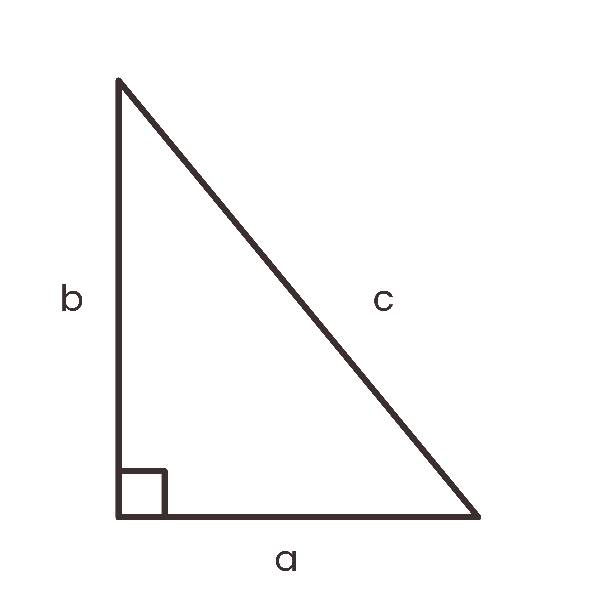

Website ini berisi berbagai sumber belajar seputar Teorema Pythagoras, meliputi Materi yang menjelaskan konsep dan rumus Pythagoras, Latihan Soal untuk mengasah kemampuan, serta Kalkulator Pythagoras yang dapat membantu kamu menghitung sisi segitiga siku-siku dengan mudah.
Silakan pilih menu di atas untuk mulai belajar atau mencoba kalkulatornya!
Visualisasi Teorema Pythagoras ($c^2 = a^2 + b^2$)